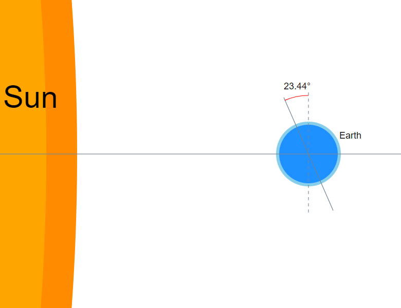
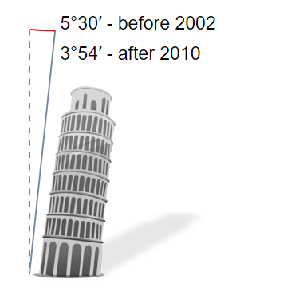
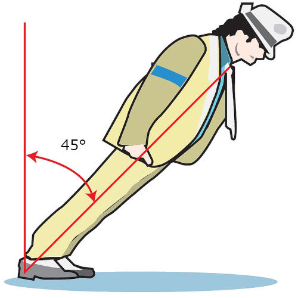

Our planet’s angle of tilt is about 23.44 degrees, relative to Earth's orbit around the sun.

Before the restoration the tower was tilted at an angle of 5.5 degrees. After the restoration it leans at about 3.5 degrees.

Michael Jackson leaned forward at about 45 degree angle in his "Smooth Criminal" video clip.© 2019 Xantorohara